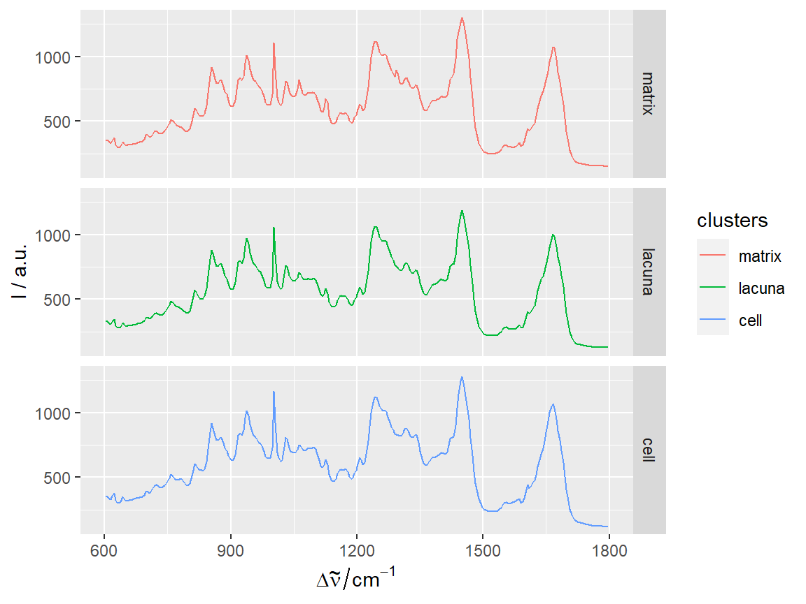
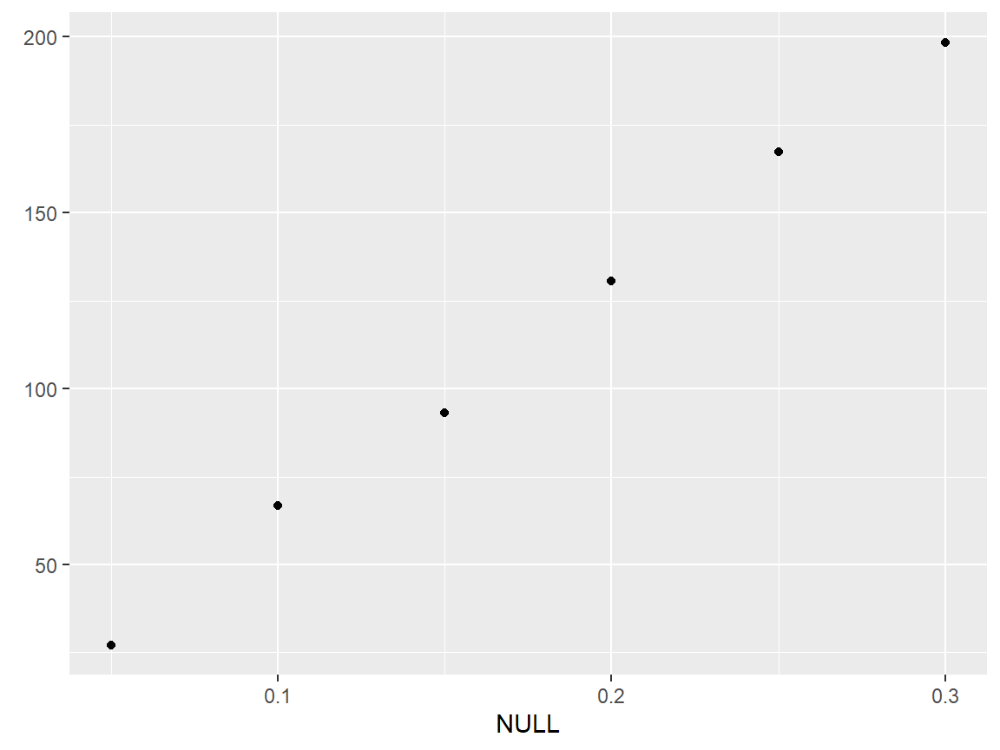

hyperSpec Plotting Examples with ggplot2
2020-03-17
v3_Plotting_Examples_gg_hy.RmdLoad packages
qplotspc
data(chondro, package = "hyperSpec")
#> Warning in data(chondro, package = "hyperSpec"): data set 'chondro' not found
qplotspc(chondro)# +
# theme(strip.text = element_blank(),
# strip.background = element_blank())
qplotspc(hyperSpec::aggregate(chondro, chondro$clusters, mean),
mapping = aes(x = .wavelength,
y = spc,
colour = clusters)) +
facet_grid(clusters ~ .)
qplotspc(hyperSpec::aggregate(chondro, chondro$clusters, mean_pm_sd),
mapping = aes(x = .wavelength,
y = spc,
colour = clusters,
group = .rownames)) +
facet_grid(clusters ~ .)
qplotc
qplotc(flu)
#> Warning in qplotc(flu): Intensity at first wavelengh only is used.
#> Warning: Using `as.character()` on a quosure is deprecated as of rlang 0.3.0.
#> Please use `as_label()` or `as_name()` instead.
#> This warning is displayed once per session.


qplotmixmap
qplotmap with colour mixing for multivariate overlay
chondro <- chondro - spc.fit.poly.below(chondro)
chondro <- sweep(chondro, 1, apply(chondro, 1, mean), "/")
chondro <- sweep(chondro, 2, apply(chondro, 2, quantile, 0.05), "-")
qplotmixmap(chondro[,,c(940, 1002, 1440)],
purecol = c(colg = "red",
Phe = "green",
Lipid = "blue"))
#> Warning: Removed 300 rows containing missing values (geom_point).